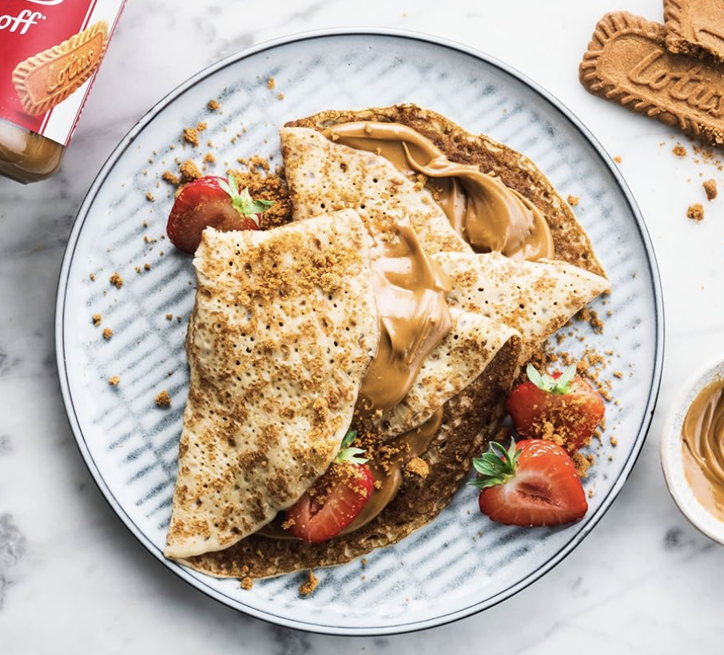

Lotus Biscoff Crepes

Ingredients
For The Crepes
- 1 cup all-purpose flour
- 2 large eggs
- 1 1/2 cups milk
- 2 tablespoons melted butter
- 1 tablespoon granulated sugar
- 1 teaspoon vanilla extract
- A pinch of salt
For The Toppings
- Grated white chocolate
- Fresh berries
- Melted Lotus Biscoff Spread
- Additional crushed Lotus Biscoff cookies
Instructions
- Prepare the Crepe Batter. In a large mixing bowl, whisk together the milk, melted butter and eggs until smooth.
- Combine the flour, salt and sugar and whisk until the batter is smooth and free of lumps.
- Let the batter rest for about 5-10 minutes to allow the flour to fully absorb the liquids.
- Cook the Crepes. Heat a non-stick skillet or crepe pan over medium heat. Lightly grease with butter or cooking spray.
- Pour about 1/4 cup of the batter into the pan, swirling it around to coat the bottom evenly.
- Cook for about 1-2 minutes until the edges start to lift and the bottom is golden brown. Flip the crepe and cook for another 1-2 minutes.
- Repeat with the remaining batter, stacking the cooked crepes on a plate and covering them with a clean kitchen towel to keep warm.
- Assemble the Crepes. Spread a generous amount of the Lotus Biscoff filling over one side of each crepe.
- Fold the crepes into quarters or roll them up.
- Garnish with crushed Lotus Biscoff cookies, whipped cream, fresh berries, or any other desired toppings.
- Serve the crepes warm, with additional toppings as desired. Enjoy the delightful combination of crepes and Lotus Biscoff!